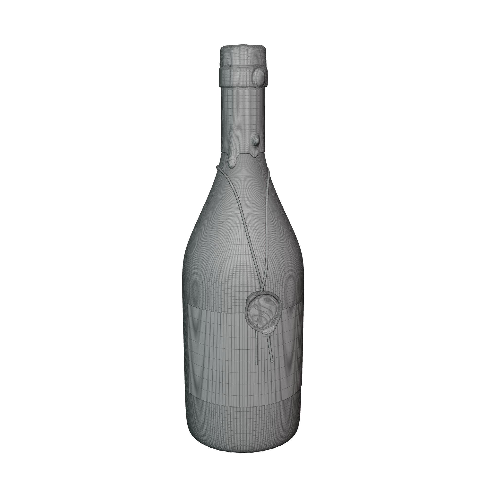

Session #3
Course Intro
In this second half of Intro to Blender, we will follow a lecture format with demonstrations. I strongly encourage you to actively participate by trying to mimic the demos as they are presented. This hands-on approach will enhance your learning experience and allow you to gain practical skills by actively engaging with the material.
Given the extensive amount of concepts to cover during these three hours, it is highly recommended that you thoroughly review the notes before the next hands-on session. This review will help solidify your understanding of the material and prepare you for active participation in the upcoming session.
Topics covered in the previous two sessions
Modeling Workshop Session
In the second half of this introductory course, we will focus on modeling more complex shapes, utilizing modifiers to create natural distortions, and generating sophisticated generative textures. The culmination of these topics will be an aesthetically pleasing rendering of a wine bottle.

Review of syllabus (10)
Concepts (15)
- Subdivision modeling
- Modifiers
- Texturing
- Procedural Textures
- Mapped Textures
Today's Session (10)

Core concepts
- Subdivision Modeling
- Solidify Modifier
- Displacement Modifier
- Shrinkwrap Modifier
- Modifier Application
- Mesh Cleanup
- Activating and Utilizing Add-ons
- Use of Proportional Editing
- Creating and Modifying Curves
Activating Add-ons (5)
- Activating the Loop Tools Add-on
- Activating the Node Wrangler Add-on
Setting up our User Interface (10)
- Creating Window Splits
- Creating Workspaces
- Turning on Pack External Resources
Creating The Bottle (45)
- Creating a Cylinder
- Deleting Cylinder Ends
- Resizing the Cylinder
- Extruding the Cylinder
- Resizing Loops
- Applying the Subdivision Modifier
- Adding a Solidify Modifier
- Applying Both Modifiers
- Editing Mesh with Loop Tools
- Proportionally Editing the Bottom
- Filling an Open Hole
- Adding and Adjusting Loop-Cuts
- Applying a Displacement Modifier
- Using a Texture with the Modifier
Break (15)
Creating a Label Ring with a Cylinder (10)
- Adding a Cylinder
- Isolating with the (?) key
- Deleting both Ends
- Rotating
- Exiting Isolation with the (?) key
- Sizing to the Bottle
- Adjusting Position
Creating the Cork (15)
- Extruding
- Loop Cuts
- Bevel Tool
Creating the Wax Dipped Top (20)
- Duplicating Faces
- Separating the Duplicated Faces
- Modeling the Duplicated Mesh
- Thickening the Mesh using the Solidify Modifier
- Applying the Modifier
- Applying Bevels
- Subdividing
- Smoothing Shading
Creating the Wax Seal (15)
- Adding a Circle
- Grid Filling the Circle
- Adding the Solidify Modifier
- Applying the Modifier
- Insetting the Face
- Extruding the Face Inward
- Editing Mesh Points for Wax Drip Effect
- Applying Subdivision Modifier
- Smoothing Shading
Creating the String (10)
- Adding a NURBS Curve
- Positioning the NURBS Curve
- Subdividing and Bending
- Adding a Profile to the Curve
Creating the Backdrop (10)
- Adding a Plane
- Scaling the Plane
- Applying Scale
- Extruding Back
- Beveling
Next Week
Will will be creating and applying textures, placing lighting and setting up the rendering of this wine bottle project.
{kind=link}
{kind=link}
{kind=link}
{kind=link}